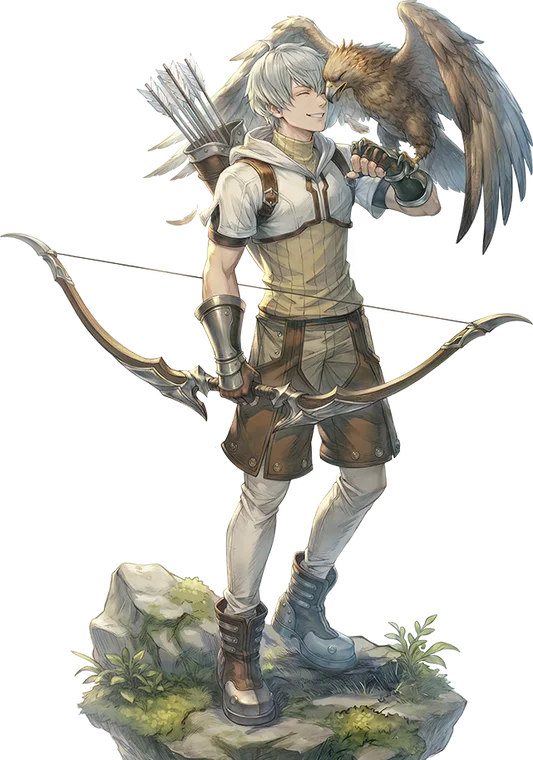

Second tier
Hunter
Hunter is the primary advancement option for the Archer class. It fills much the same role, attempting to finish off enemies from range, but now has a few more tools to aid in the process.
The Hunter skill tree is broadly divided into three branches. The first is the Marksmanship branch, characterized by a number of skills with primarily Variable Cast Times. The first skill is Precision Shot, a skill dealing moderate damage which deals additional damage if the target is Slowed. To aid in this, the next skill is Threefold Arrow, a skill that fires in three modes, either applying Slow, Vulnerable, or Stun, depending on which the target is already suffering from. These skills are supplemented with the self buff Marksman's Focus, a skill that gives a reasonable increase to Hit and Crit for the user.
The second branch consists of Trap skills, Toxic Mine, Shrapnel Mine, and Incendiary Mine, all doing exactly what you'd expect: inflicting Poison, Bleeding, and Burning respectively. In exchange for this huge range of status effects, the traps come with a glaring weakness , each of them sports a colossal Fixed Cast Time, forcing the Hunter to set up traps before combat to realistically use them, unless they also invest in the companion skill, Trapper's Focus. This buff not only removes the Fixed Cast Time of all Traps, it also extends the duration of the Statuses inflicted by the three trap skills, allowing potentially full up time on all three.
The final branch is the one you've all been waiting for, the Falcon skills. These skills are designed to enhance the other two branches. Blitz Beat, while retaining its autocasting nature, can still be force cast, and in either case will attempt to inflict the Slow status on all enemies affected. Those suffering from Bleeding, Burning, or Poison will have a much greater chance of being Slowed. Paired with it is Aggravating Assault, a skill which does heavy damage to targets suffering from the Slowed status, while also extending the duration of Bleeding, Burning, and Poison on them. This unique pairing of attributes allows the Falcon skills to both support each other and the other two Hunter branches.

Skill list
Skills
Skill names and effects are kept in English because that is how they appear in game.
- Marksman's Focus
Self buff. Increases Hit and Crit Rate. Does not stack with Trapper's Focus.
- Precision Shot
Takes careful aim at a target before firing, dealing significant damage that is increased against Slowed enemies.
- Threefold Arrow
Three part skill. Initially attempts to inflict Slow. If the target is already Slowed, instead attempts to inflict Vulnerable. If the target is already Vulnerable, instead attempts to inflict Stun.
- Trapper's Focus
Self buff. Removes the Fixed Cast Time of Trap skills, and increases the duration of statuses they inflict. Does not stack with Marksman's Focus.
- Toxic Mine
Sets a trap that spews a cloud of poisonous gas when triggered. Deals damage scaling with the user's Agi, and inflicts the Poison status on all enemies in a 5x5 area. This skill has an extremely long Fixed Cast Time.
- Shrapnel Mine
Sets a trap that explodes in a cloud of shrapnel when triggered. Deals damage scaling with the user's Dex, and inflicts the Internal Bleeding status on all enemies in a 5x5 area. This skill has an extremely long Fixed Cast Time.
- Incendiary Mine
Sets a trap that releases a cloud of burning gas when triggered. Deals damage scaling with the user's Int, and inflicts the Burning status on all enemies in a 5x5 area. This skill has an extremely long Fixed Cast Time.
- Falcon Mastery
Passive. Allows the usage of a Falcon, and increases the damage of all Falcon-related skills.
- Blitz Beat
Commands the Falcon to attack enemies in a small area, dealing Defense-ignoring damage that has a chance to Slow. Enemies suffering from Bleeding, Burning, or Poison have an increased chance of being Slowed. This skill has a chance to be autocast with each non-skill attack made with a bow, ignoring its Cooldown.
- Aggravating Assault
Commands the Falcon to harass a single enemy, dealing heavy Defense-ignoring damage that is significantly increased if the target is Slowed. If the target is suffering from any of the Bleeding, Burning, or Poison statuses, those statuses have their durations extended by a fixed amount.
Come find out what changed
Make an account now, grab the client, and be there when the servers go up.